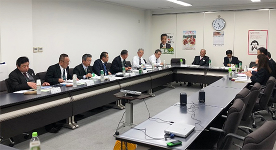

2019年度埼玉県協同組合間提携推進協議会代表者会報告
今後の協同組合連携のすすめ方について意見交換しました

12月17日（火）16時より、埼玉県協同組合間提携推進協議会代表者会が、JA埼玉県中央会会議室で開催されました。この会は、JA埼玉県中央会、JA全農さいたま、コープみらい、埼玉県生協連で構成し、農業協同組合と生活協同組合が相互理解を深め、協同活動の実施や協同組合の社会的･経済的地位の向上を目的に行われています。今年は4団体から18人が参加し、各団体の活動報告が行われた後、県内協同組合と協同組織も含めた協同組合連携の進め方についての意見交換を行いました。
- 出席者：
- 代表者12人（敬称略）
JA埼玉県中央会：若林龍司（会長）、永島朗（専務理事）、小池和明（常務理事）、西田秀生（農政対策部長）、JA全農さいたま：水村洋一（県本部長）、大畑宅美（副本部長）、石川晃（副本部長）、須賀淳（管理部長）、コープみらい：大山克己（常務執行役員、埼玉県本部長）、本多達（埼玉県本部参加とネットワーク推進部長）、埼玉県生協連：吉川尚彦（会長理事）、大久保美紀（常務理事）
事務局6人
JA埼玉県中央会：青木賢吾（農政対策部次長）、内田幸秀（農政対策部部長代理）、野村達也（農政対策部）、JA全農さいたま：櫻井武士（企画管理課長）、コープみらい：岡直政（企画渉外課長）、埼玉県生協連：加藤一彦（事務局長）
1．開会にあたりJA埼玉県中央会の若林会長と埼玉県生協連の吉川会長理事からあいさつを行いました。その後、座長に吉川会長理事を選出し、会議を進めました。
2．議事として、埼玉県協同組合間提携推進協議会規約の一部改定の件（構成団体の名称変更）が提案され、議決されました。
3．各団体からの活動報告と、今後の協同組合連携の進め方について年間スケジュールの案が報告されました。これを受けて質疑応答、意見交換が行われました。
- 県内農業従事者の現状とサポートの体制について
- 子ども食堂、地域の居場所などの取り組みと、県内77か所直売所との連携について
- 近年の自然災害による県内農業への影響について
- CSF（豚コレラ）に対する消費者の反応について
- 健康づくりの取り組みでの連携について
- 協同組合連携に関する事務局定期協議の実施について
4．最後に、次年度も代表者会を開催することについて確認し、終了しました。